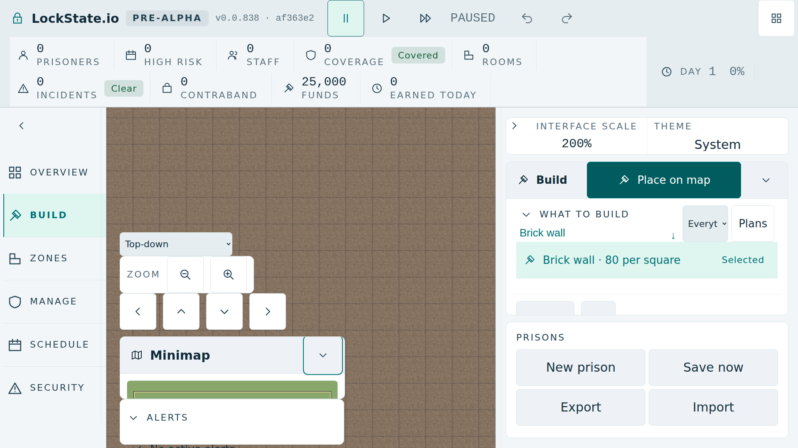

Dwa warianty do decyzji właściciela. Żaden nie jest wdrożony ani zaakceptowany pomiarem natywnym. Oba zachowują powiększenie, wybór widoku, cztery kierunki przesuwania oraz cztery kontrolki obrotu i nachylenia w Angled.
A: Zoom pozostaje stale widoczny. Przycisk „Widok” otwiera panel z dotychczasowym wyborem widoku, przesuwaniem, obrotem i nachyleniem. Otwarcie wymaga jednego dodatkowego naciśnięcia; Escape zamyka panel i oddaje fokus przyciskowi. Po zamknięciu panel nie zasłania mapy.
Schemat interaktywny, nie zrzut gry. Kontrolki tutaj tylko pokazują układ. Rzeczywisty wariant natywny będzie używał oryginalnych elementów i ich oryginalnych zdarzeń. Podgląd nie dowodzi wysokości wiersza alertu ani hit-testów.
| Obszar | Wymaganie |
|---|---|
| #1292 | Oryginalne 398 px narożnika, sześć sekcji, próg 781 px i odstępy 29,19 / 10,19 / 9,19 px przy 1280×800 / 781 / 780. Nie zmieniamy testów. |
| Alerty | Pełny rzeczywisty wiersz mieści się w clientHeight listy. Lista widoczna po Build → Overview przy 100% i 200%; panel kamery nie przykrywa jej centrum. |
| Kontrolki | Oryginalne elementy i zdarzenia. Każda widoczna kontrolka zachowuje target 44 px × skalę i przechodzi hit-test centrum. Obrót i nachylenie dostępne po przejściu do Angled. |
| Mapa | Nie odejmujemy miejsca z minimapy ani alertu. Panel kamery zajmuje osobne miejsce nad mapą i zawija swoje grupy; jego faktyczna wysokość i ewentualne kolizje wymagają zrzutu i pomiaru. |
A używa obecnego tekstu widocznego „View” / „Widok” na przycisku. Nowa nazwa regionu i dostępna nazwa przycisku: EN: Camera controls; PL: Sterowanie kamerą. Nazwy opcji, przesuwania, obrotu, nachylenia i Zoom pozostają obecne. B potrzebuje tylko tej samej nowej nazwy regionu.
B utrzymuje wszystkie kontrolki stale pod ręką i nie dodaje naciśnięcia, ale stale zasłania część górnej mapy. A oddaje to miejsce po zamknięciu, ale wymaga otwarcia przed wyborem widoku, przesuwaniem przyciskami, obrotem lub nachyleniem. Klawiatura, przeciąganie i istniejące skróty pozostają poza proponowaną zmianą.
Wariant odjęcia 96 / 148 px od powierzchni minimapy został odrzucony jako pełne rozwiązanie: Angled ma za małą powierzchnię, a przy FullHD200 budżet staje się ujemny.
Zapisany błąd, nie wynik kandydatów. SHA256: c29577e163dbeb1244e263bf3b73c99261693df27c2a1d770f988ee3aa3ca888.

Typowany przepis natywny · Tymczasowe warianty DOM i niezmienione asercje